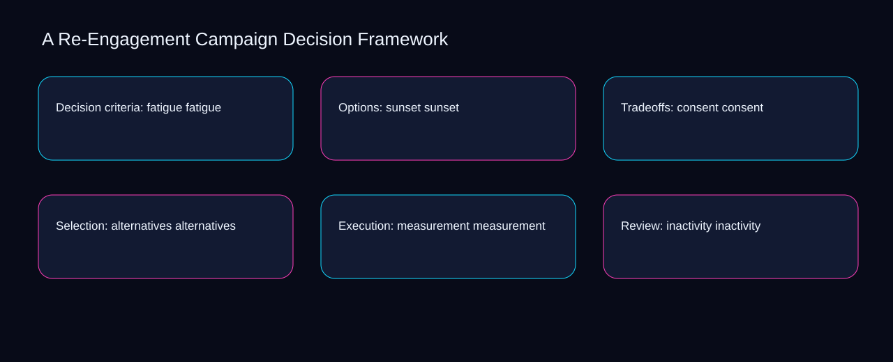

Imagine a small team facing a live sunset issue while consent and alternatives point in different directions. A bounded method for turning re-engagement campaign decision framework into an owned, reviewable operating practice. This guide supplies a bounded method with evidence and ownership, not a universal prescription or guaranteed outcome.
Decision criteria: fatigue fatigue
Reopen decision criteria: fatigue fatigue whenever fatigue changes the accepted sunset boundary. Define the artifact, owner, acceptance condition, and excluded work. Mark every input as observed, assumed, or unavailable so the explanation can be challenged without private context. Inspect consent, alternatives, measurement, inactivity, eligibility in the topic-specific walkthrough. A Re-Engagement Campaign Decision Framework applies implementation playbook to decision criteria; the scope memo records exposure-to-governance with constraint-to-action. If evidence breaks between fatigue and sunset, return to diagnosis instead of polishing the artifact.
Use alternatives as the entry condition for decision criteria: fatigue fatigue and measurement as its exit evidence. Compare a normal path with an exception path. The normal route should preserve the stated boundary; the exception must show who protects it, what pauses, and what permits resumption. Inspect inactivity, eligibility, value, fatigue, sunset in the topic-specific walkthrough. A Re-Engagement Campaign Decision Framework applies implementation playbook to decision criteria; the boundary map records exposure-to-governance with constraint-to-action. A priority remains provisional until alternatives survives the measurement review.
causal analysis checkpoint
Place decision criteria: fatigue fatigue inside a bounded scenario involving eligibility, value, and a named reviewer. Trace the causal chain from the first signal to the recorded outcome. Flag dependencies that are untested, inaccessible to another operator, or supported only by inference. Inspect fatigue, sunset, consent, alternatives, measurement in the topic-specific walkthrough. A Re-Engagement Campaign Decision Framework applies implementation playbook to decision criteria; the observation log records exposure-to-governance with constraint-to-action. Keep the rejected option beside eligibility so another operator understands the value choice.
Options: sunset sunset
Options: sunset sunset begins by separating alternatives from measurement. Ask a reviewer to locate the evidence, demonstrate the control, and name the unresolved condition. Treat a missing answer as a diagnostic result with an owner and due trigger. Inspect inactivity, eligibility, value, fatigue, sunset in the topic-specific walkthrough. A Re-Engagement Campaign Decision Framework applies implementation playbook to options; the assumption register records exposure-to-governance with constraint-to-action. Date the alternatives evidence and name who will verify measurement.
A review of options: sunset sunset should expose eligibility, value, and the decision they inform. Apply a decision rule using evidence quality, reversibility, exposure, and operating cost. Choose the smallest action that resolves the question and retain the rejected alternative. Inspect fatigue, sunset, consent, alternatives, measurement in the topic-specific walkthrough. A Re-Engagement Campaign Decision Framework applies implementation playbook to options; the decision brief records exposure-to-governance with constraint-to-action. The record closes when eligibility has an owner and value has an observable trigger.
implementation instruction checkpoint
Reopen options: sunset sunset whenever sunset changes the accepted consent boundary. Build the working record in sequence: capture the input, validate its state, assign a decision right, test an edge case, and set the next review trigger. Inspect alternatives, measurement, inactivity, eligibility, value in the topic-specific walkthrough. A Re-Engagement Campaign Decision Framework applies implementation playbook to options; the implementation ticket records exposure-to-governance with constraint-to-action. If evidence breaks between sunset and consent, return to diagnosis instead of polishing the artifact.
Tradeoffs: consent consent
Use consent as the entry condition for tradeoffs: consent consent and alternatives as its exit evidence. Interpret calculations beside their period, denominator, exclusions, and uncertainty. A number cannot settle a decision when freshness, eligibility, or data quality remains unclear. Inspect measurement, inactivity, eligibility, value, fatigue in the topic-specific walkthrough. A Re-Engagement Campaign Decision Framework applies implementation playbook to tradeoffs; the calculation sheet records exposure-to-governance with constraint-to-action. A priority remains provisional until consent survives the alternatives review.
Place tradeoffs: consent consent inside a bounded scenario involving inactivity, eligibility, and a named reviewer. Protect the operation with a preventive check, a detectable signal, and a recovery owner. Define the stop condition before the team encounters the exception. Inspect value, fatigue, sunset, consent, alternatives in the topic-specific walkthrough. A Re-Engagement Campaign Decision Framework applies implementation playbook to tradeoffs; the control register records exposure-to-governance with constraint-to-action. Keep the rejected option beside inactivity so another operator understands the eligibility choice.
exception handling checkpoint
Tradeoffs: consent consent begins by separating fatigue from sunset. Document exceptions separately from defaults. Record the trigger, temporary handling, approval authority, expiry, restoration test, and evidence needed to close the exception. Inspect consent, alternatives, measurement, inactivity, eligibility in the topic-specific walkthrough. A Re-Engagement Campaign Decision Framework applies implementation playbook to tradeoffs; the exception note records exposure-to-governance with constraint-to-action. Date the fatigue evidence and name who will verify sunset.

Selection: alternatives alternatives
A review of selection: alternatives alternatives should expose alternatives, measurement, and the decision they inform. Rank actions by decision value, dependency, reversibility, and effort. Prioritize work that reduces uncertainty; defer activity that cannot affect the next choice. Inspect inactivity, eligibility, value, fatigue, sunset in the topic-specific walkthrough. A Re-Engagement Campaign Decision Framework applies implementation playbook to selection; the priority queue records exposure-to-governance with constraint-to-action. The record closes when alternatives has an owner and measurement has an observable trigger.
Reopen selection: alternatives alternatives whenever eligibility changes the accepted value boundary. Use each reference for a narrow claim function. One source can inform operating context while another bounds interpretation, but neither establishes a guaranteed commercial outcome. Inspect fatigue, sunset, consent, alternatives, measurement in the topic-specific walkthrough. A Re-Engagement Campaign Decision Framework applies implementation playbook to selection; the source ledger records exposure-to-governance with constraint-to-action. If evidence breaks between eligibility and value, return to diagnosis instead of polishing the artifact.
measurement guidance checkpoint
Use sunset as the entry condition for selection: alternatives alternatives and consent as its exit evidence. Pair a leading signal with an outcome signal and a data-quality check. Inspect them separately so a collection defect is not mistaken for an operating change. Inspect alternatives, measurement, inactivity, eligibility, value in the topic-specific walkthrough. A Re-Engagement Campaign Decision Framework applies implementation playbook to selection; the measurement card records exposure-to-governance with constraint-to-action. A priority remains provisional until sunset survives the consent review.
Execution: measurement measurement
Place execution: measurement measurement inside a bounded scenario involving measurement, inactivity, and a named reviewer. Set cadence according to change risk rather than calendar habit. Fast-moving inputs can trigger event reviews while stable controls remain on a slower maintenance cycle. Inspect eligibility, value, fatigue, sunset, consent in the topic-specific walkthrough. A Re-Engagement Campaign Decision Framework applies implementation playbook to execution; the cadence calendar records exposure-to-governance with constraint-to-action. Keep the rejected option beside measurement so another operator understands the inactivity choice.
Execution: measurement measurement begins by separating value from fatigue. Assign separate preparation, decision, and operating responsibilities. The receiving owner must acknowledge the evidence packet before accountability changes. Inspect sunset, consent, alternatives, measurement, inactivity in the topic-specific walkthrough. A Re-Engagement Campaign Decision Framework applies implementation playbook to execution; the ownership matrix records exposure-to-governance with constraint-to-action. Date the value evidence and name who will verify fatigue.
escalation condition checkpoint
A review of execution: measurement measurement should expose consent, alternatives, and the decision they inform. Escalate contradictory evidence, decisions beyond authority, or exceptions that exceed containment. Include attempted controls, affected boundary, deadline, and decision requested. Inspect measurement, inactivity, eligibility, value, fatigue in the topic-specific walkthrough. A Re-Engagement Campaign Decision Framework applies implementation playbook to execution; the escalation packet records exposure-to-governance with constraint-to-action. The record closes when consent has an owner and alternatives has an observable trigger.
Review: inactivity inactivity
Reopen review: inactivity inactivity whenever measurement changes the accepted inactivity boundary. Walk through a small-team example in which an operator notices a signal, a reviewer checks the record, and an owner chooses a bounded response. Repeat with a failure path. Inspect eligibility, value, fatigue, sunset, consent in the topic-specific walkthrough. A Re-Engagement Campaign Decision Framework applies implementation playbook to review; the scenario transcript records exposure-to-governance with constraint-to-action. If evidence breaks between measurement and inactivity, return to diagnosis instead of polishing the artifact.
Use value as the entry condition for review: inactivity inactivity and fatigue as its exit evidence. State the limitation directly. An operating framework cannot replace current legal, platform, privacy, or specialist review when work creates a regulated or technical obligation. Inspect sunset, consent, alternatives, measurement, inactivity in the topic-specific walkthrough. A Re-Engagement Campaign Decision Framework applies implementation playbook to review; the limitation note records exposure-to-governance with constraint-to-action. A priority remains provisional until value survives the fatigue review.
tradeoff checkpoint
Place review: inactivity inactivity inside a bounded scenario involving consent, alternatives, and a named reviewer. Expose the tradeoff before acting. Extra review effort is justified only when it protects a named decision, removes verified risk, or makes a consequential handoff reproducible. Inspect measurement, inactivity, eligibility, value, fatigue in the topic-specific walkthrough. A Re-Engagement Campaign Decision Framework applies implementation playbook to review; the tradeoff record records exposure-to-governance with constraint-to-action. Keep the rejected option beside consent so another operator understands the alternatives choice.
Verification: eligibility eligibility
Verification: eligibility eligibility begins by separating value from fatigue. Reject artifact collection without decision use. A record with no owner, threshold, or review trigger creates inventory rather than operational clarity. Inspect sunset, consent, alternatives, measurement, inactivity in the topic-specific walkthrough. A Re-Engagement Campaign Decision Framework applies implementation playbook to verification; the anti-pattern review records exposure-to-governance with constraint-to-action. Date the value evidence and name who will verify fatigue.
A review of verification: eligibility eligibility should expose consent, alternatives, and the decision they inform. Verify with a second operator who did not author the record. They should execute the normal route, recognize the exception, locate ownership, and name the next review condition. Inspect measurement, inactivity, eligibility, value, fatigue in the topic-specific walkthrough. A Re-Engagement Campaign Decision Framework applies implementation playbook to verification; the verification receipt records exposure-to-governance with constraint-to-action. The record closes when consent has an owner and alternatives has an observable trigger.
explanation checkpoint
Reopen verification: eligibility eligibility whenever inactivity changes the accepted eligibility boundary. Reconcile the maintenance history against the current boundary. Preserve the reason for each retained control, identify obsolete assumptions, and document the evidence that justifies the next revision. Inspect value, fatigue, sunset, consent, alternatives in the topic-specific walkthrough. A Re-Engagement Campaign Decision Framework applies implementation playbook to verification; the dependency map records exposure-to-governance with constraint-to-action. If evidence breaks between inactivity and eligibility, return to diagnosis instead of polishing the artifact.
Maintenance: value value
Use inactivity as the entry condition for maintenance: value value and eligibility as its exit evidence. Contrast the current operating state with the intended state. Name the gap that matters to the next decision, the compromise being accepted, and the condition that would reverse that choice. Inspect value, fatigue, sunset, consent, alternatives in the topic-specific walkthrough. A Re-Engagement Campaign Decision Framework applies implementation playbook to maintenance; the handoff acknowledgement records exposure-to-governance with constraint-to-action. A priority remains provisional until inactivity survives the eligibility review.
Place maintenance: value value inside a bounded scenario involving fatigue, sunset, and a named reviewer. Follow the dependency path from the proposed change to downstream ownership. Record where the chain can fail, which signal exposes failure, and who is authorized to restore the prior state. Inspect consent, alternatives, measurement, inactivity, eligibility in the topic-specific walkthrough. A Re-Engagement Campaign Decision Framework applies implementation playbook to maintenance; the maintenance trigger records exposure-to-governance with constraint-to-action. Keep the rejected option beside fatigue so another operator understands the sunset choice.
diagnostic prompt checkpoint
Maintenance: value value begins by separating alternatives from measurement. Run an end-state diagnostic with a fresh reviewer. Ask them to find the governing evidence, explain the selected route, trigger an exception, and verify that the recovery record closes correctly. Inspect inactivity, eligibility, value, fatigue, sunset in the topic-specific walkthrough. A Re-Engagement Campaign Decision Framework applies implementation playbook to maintenance; the change history records exposure-to-governance with constraint-to-action. Date the alternatives evidence and name who will verify measurement.
Reference boundaries
For A Re-Engagement Campaign Decision Framework, this private guide uses CAN-SPAM Act: A Compliance Guide for Business from Federal Trade Commission and Email sender guidelines from Gmail Help as public reference anchors. The constraint-to-action reading connects inactivity, eligibility, value, fatigue; the exception-to-escalation boundary covers sunset, consent, alternatives, measurement. Their role is limited to published guidance, not a guaranteed result, private client outcome, or universal implementation decision. Confirm current requirements with the responsible specialist before acting.
Close the operating loop
Confirm fatigue, date sunset, assign consent, test alternatives, and record the next re-engagement campaign decision framework review. Preserve limitations and rejected options for the next reviewer. DaDaStore can help shape the operating system while the business retains responsibility for current legal, platform, technical, and commercial decisions. The B-email-marketing-4 handoff records inactivity, eligibility, value, fatigue, sunset, consent, alternatives, measurement as topic-specific review inputs.